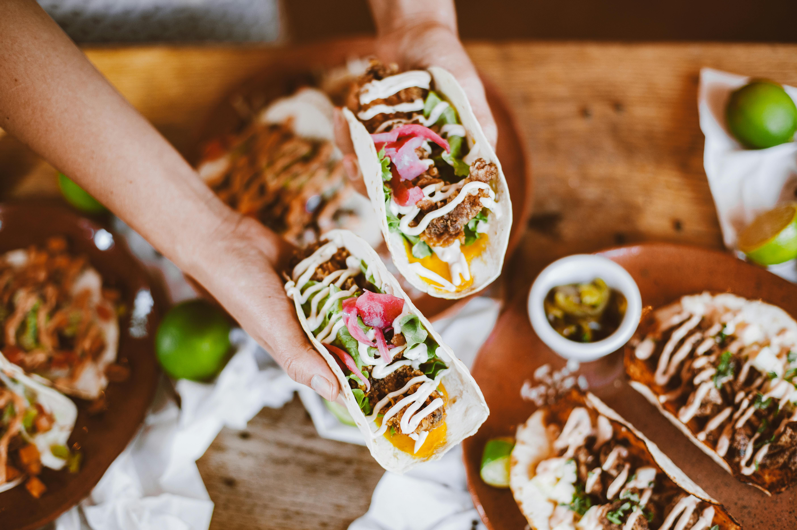

Homemade Mexican-style tacos are a quick and flavorful meal made with seasoned ground beef tucked into warm taco shells. They are topped with crisp lettuce, fresh diced tomatoes, a spoonful of sour cream, and a drizzle of salsa for extra kick. A sprinkle of shredded cheese melts over the beef, tying everything together for a classic, comforting taco experience.
Picture of the dish:

Video on how to make dish:
Brandon Favortie Dish: Sauteed Pierogies
Dish Description: Traditional polish dumpling, sauteed in a frying pan with onions and garlic for flavor.
Mithilesh Favorite Dish: Papdi Chaat

Dish Description: Papdi chaat is crispy crackers topped with multiple ingredients usually with boiled potatoes, onions, chickpeas, tomatoes, curd, sev, and chutneys.
| Gordon | Brandon | Mithilesh |
|---|---|---|
| Ground Beef, Taco mix seasoning, taco shells, Tortillas, lettuce, tomato, mexican style cheese, sour cream, onions, salsa | Pierogies (homemade with potato and cheese or storebought), onions, garlic, butter | chickpea, tomato, curd, onion, sev, red chutney, green chutney |
| Family Sharing | Family Sharing | Family Sharing |